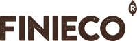
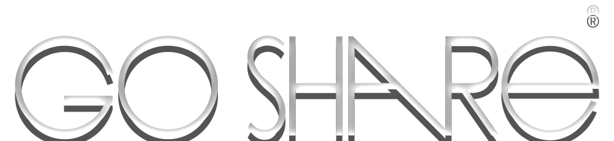
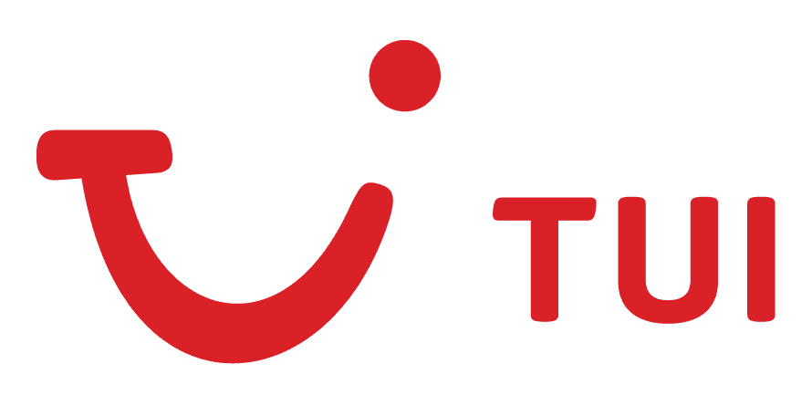

Revista digital
Projeto base
Percorre a CNM Magazine, publicada por estudantes em 2019, sobre sustentabilidade e comunicação.
A preparar o livro digital…
Não foi possível carregar o livro digital. Se abriste o site diretamente como ficheiro, tenta abrir a página através de um servidor Web.
Agradecimentos
Os nossos patrocinadores


Gelarte Confeitaria
IBMA
Buril Artes Gráficas
